A case study · 2020 – 2024
Submissions
A podcast I started in 2020 to share stories from Muslims. Four years, a team of seven, 24 episodes and one live show.

Preface
A name with two meanings
In early 2020 I started a podcast built on one idea: ordinary Muslims sending in voicenotes about the small moments that changed them. I found the team, the storytellers and the shape of the show, and designed everything it wore. The name did two jobs, and the launch post said so plainly:
“Our podcast is called Submissions to remind us how every moment can be in submission to Allah, and how every story submission is unique.”
The Submissions Podcast, launch post, July 2020
This is the story of how it was made: first the mark, then the show itself.
Part one
The mark


-
01
Start with the subject
The Ka‘bah is a cube in the centre of the Grand Mosque in Mecca, covered in black cloth with a band of gold calligraphy around its upper third. Muslims everywhere pray towards it. For a podcast of Muslims’ stories it was the obvious starting point. The hard part was making it a mark rather than clip art.
-
02
Draw it literally first
The first versions were exactly that: an isometric cube in navy, lit from one side, with the name in a thin serif. They were accurate, but they were pictures of the Ka‘bah, not a logo. At the size of a podcast app icon, the shading and the hairline type would barely register.
-
03
Turn it to the corner
Stand at one corner of the Ka‘bah and two faces meet in a single vertical edge. Flatten that view, drop the perspective and the top face disappears. The roofline becomes a chevron. That one angle carries most of the recognition.
-
04
Leave the gold out
The gold band is what makes the Ka‘bah unmistakable, so it had to stay. But instead of drawing it, I took it away. The band became a gap in the black, and the background shows through where the gold used to be.
Set the whole thing on yellow and the gap reads as gold anyway. The most important part of the logo is the part that isn’t drawn.
-
05
Put the name in the base
The wordmark sits on the lower edge of the cube and follows its angle. It’s cut out of the black rather than printed on top, so the bottom of the building is the baseline of the type. Name and mark are one shape.
-
06
Let it mean more than one thing
Once it was this simple, the shape started doing several jobs at once. It’s the Ka‘bah. It’s an upward arrow, for listeners sending their stories in. And it’s an open book lying face down, which is where the idea first began.
Interlude
On negative space
Negative space is everything in a design that isn’t the subject: the gaps, the margins, the space between and around things.
Designers call the subject the figure and the space around it the ground. Most of the time the ground just sits there. The interesting moments are when it starts carrying meaning too.
In 1915 the Danish psychologist Edgar Rubin published the drawing on the right. It’s a vase, or it’s two faces looking at each other. You can see either, but never both at the same moment, because your eye can only treat one of them as the figure.
The FedEx logo, designed by Lindon Leader in 1994, does the same trick quietly. There’s an arrow in the white space between the E and the x. Most people never notice it, and once you do, you can’t stop seeing it.
The Submissions gap works the same way. You read it as gold because your eye fills in what it expects to be there.
“Clay is fashioned into vessels; but it is on their empty hollowness that their use depends.”
Lao Tzu, Tao Te Ching, ch. 11 (trans. James Legge)
“…when there is no longer anything to take away.”
Antoine de Saint-Exupéry, on when perfection arrives
Part two
The show
Production
Made from voicenotes
Most podcasts start with a host and a microphone. Submissions started with an inbox. Listeners recorded their story on their phone and sent it in, so the storyteller could tell it in their own voice.
That decision shaped everything after it. We couldn’t control the sound, so the craft went into listening, choosing and editing. Stories were grouped by theme, so every episode had an argument rather than a list.
- 01
Ask
A standing call for stories on the site and in every caption, with a short guide on how to record one.
- 02
Collect
Voicenotes arrive by email. Small or big, short or long.
- 03
Listen
The team listens to everything and looks for a thread that ties a handful of stories together.
- 04
Shape
Each episode gets a theme and a title: Silver Linings, Divine Journeys, In Good Time.
- 05
Edit
The chosen stories are cut down and put in order, so the episode builds.
- 06
Release
Out on Spotify, Apple and Google Podcasts, with a card, a preview clip and a countdown on socials.
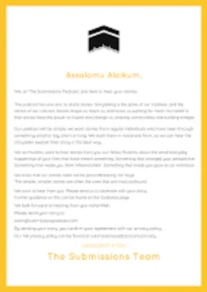


System
A feed that reads as a series
Every episode got the same card: white, the title set large, the mark underneath, on a yellow border. On its own each one is plain. Together they make the feed look like the spines of a book series.


Fig. 11 — Season one, September to December 2020, and season two, 2021 to 2022
Timeline
Four years, in order
The idea
Submissions starts as a plan and a name. I put the team together and start finding storytellers.
Trailer and mark
The trailer goes up on Spotify on 25 July. Five days later, the first Instagram post is just the logo.

Episode one
A countdown, a preview clip, then “Out now” on 10 September.

Meet the team
I drew every member of the team in the show’s style: five colours, no faces. They became the Submissions Illustrations.

Into the charts
Spotify picks Submissions as a Ramadan Recommendation. It enters the UK Religion & Spirituality chart on 16 April and peaks at number 9.
First birthday
The audience grew 585% in a year. Two new members join the team.

Ramadan minisodes
Short episodes through each Ramadan, with their own illustrated artwork.

Live
Our first live show. More below.
Handing on
I step back after four years. The team keeps it going.
- Episodes
- 24
- Countries listening
- 79
- UK chart peak
- #9
- Volunteers
- 7
Live
Journeys in Faith
A live storytelling night had been the plan since launch. On 13 May 2023 we held it at Root25, a café in London, for a small audience. The storytellers spoke about childbirth, love, faith and pilgrimage.
“A space we had only dreamed of being possible was borne, one brimming with emotion, vulnerability and, as a result, true connection.”
The Submissions Podcast, two nights later
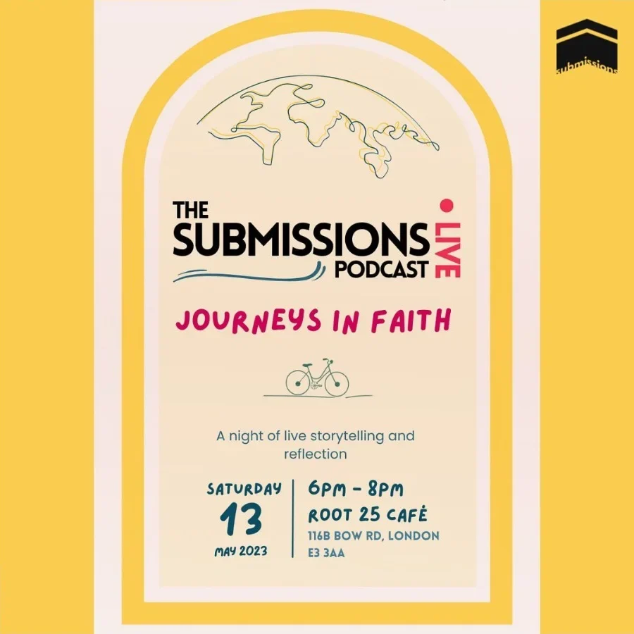
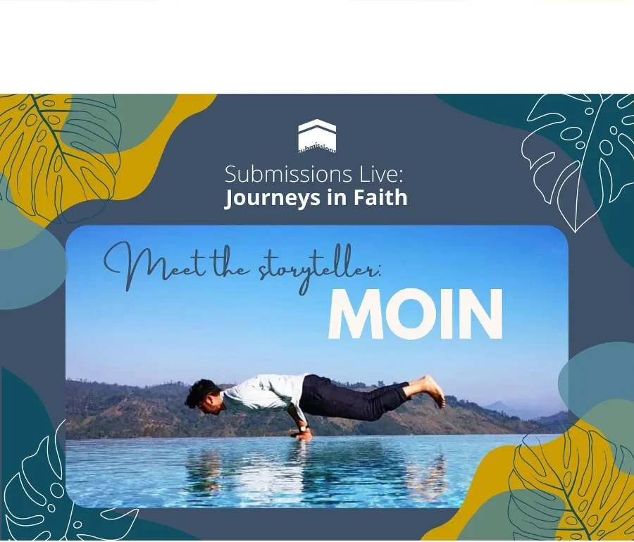
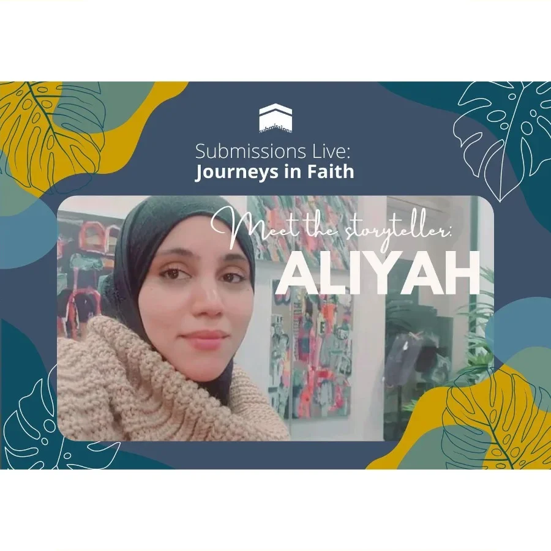
Finding the poster
The poster went through eight directions before it settled. The arch, the line-drawn globe and the bicycle stayed in almost every version, a nod to journeys. What changed was everything around them: the colours, the type, how loud the title was. By the end, the script lettering had gone and the date and venue sat together in one block you can read at a glance.
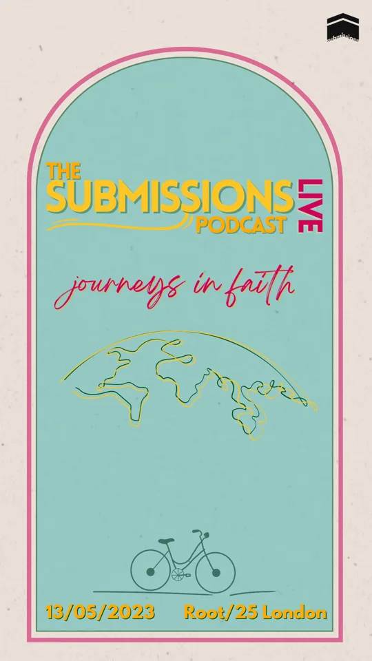
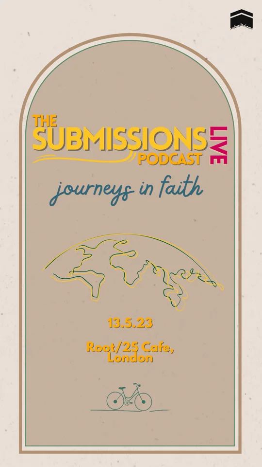
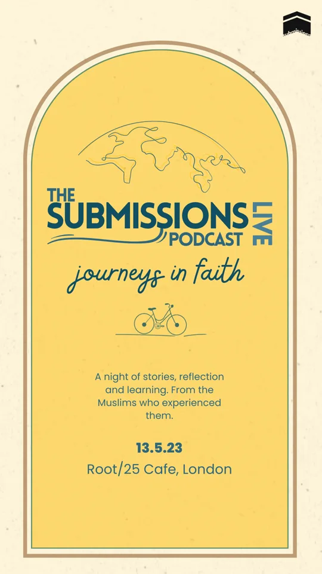
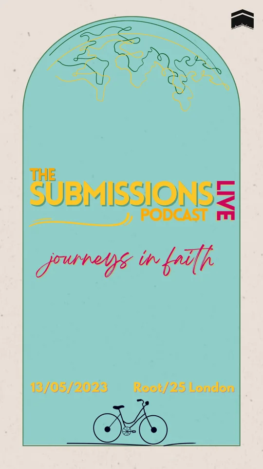
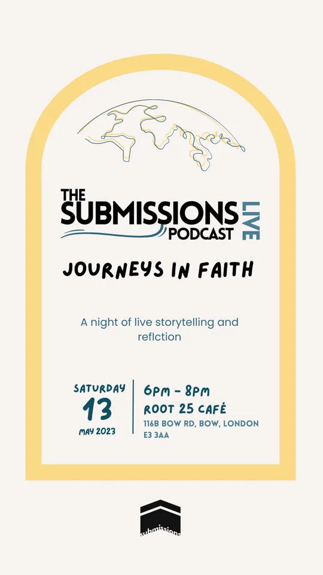
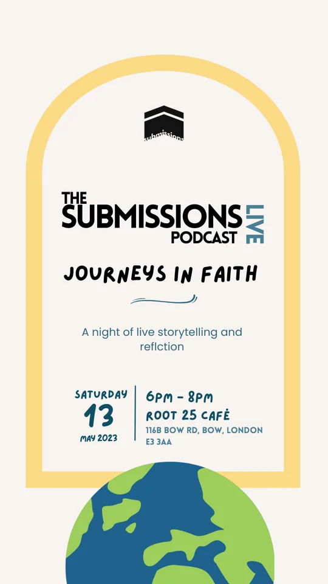
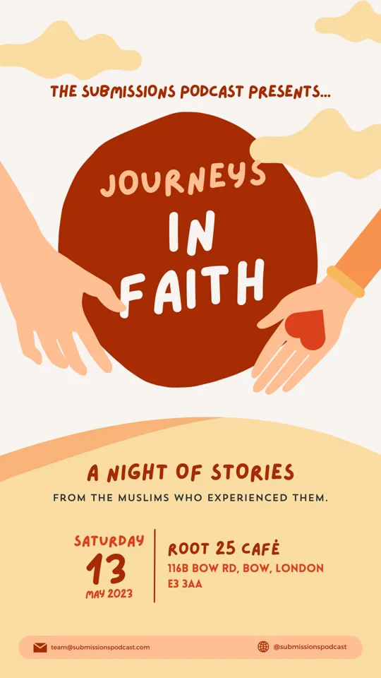
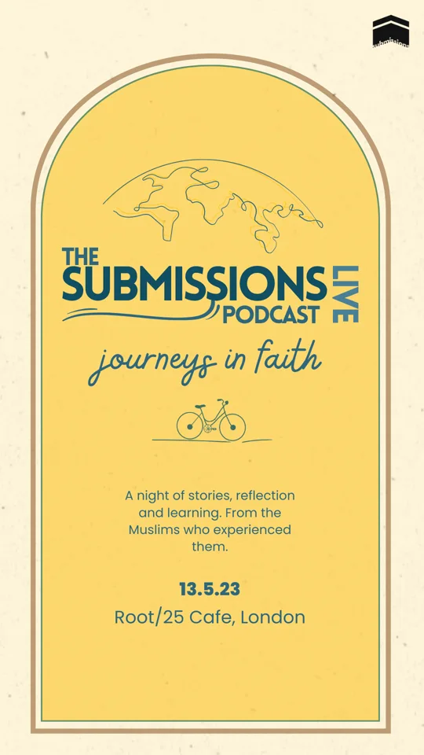
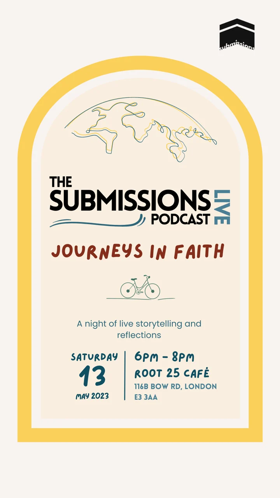
Fig. 15 — Poster explorations, March 2023, left to right. Scroll sideways.
Back to all work →“Less, but better.”
Dieter Rams